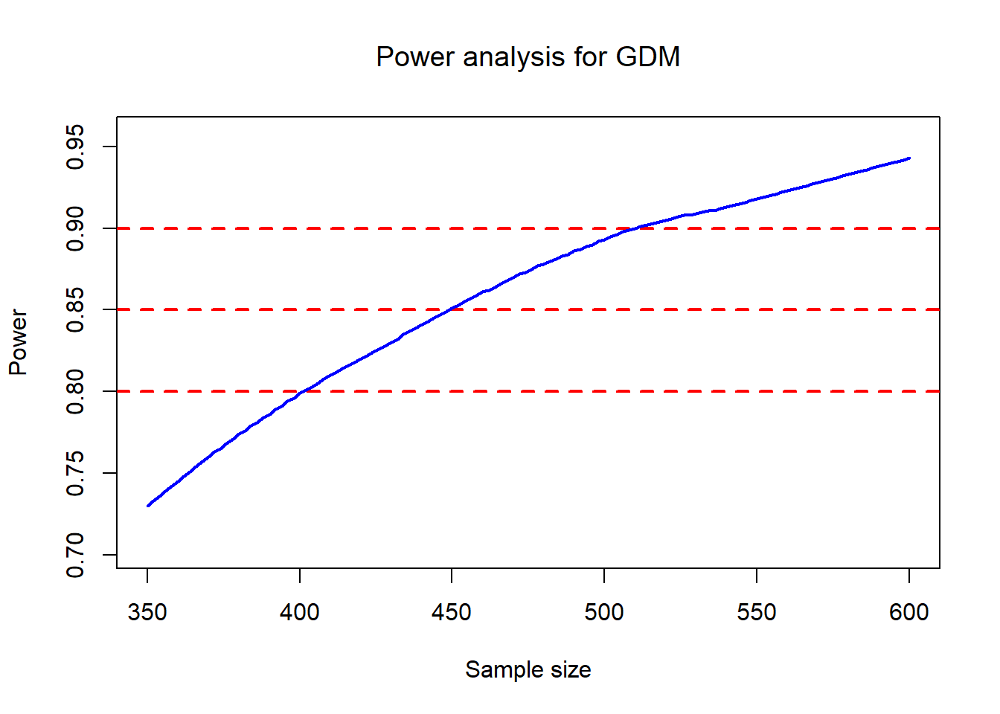
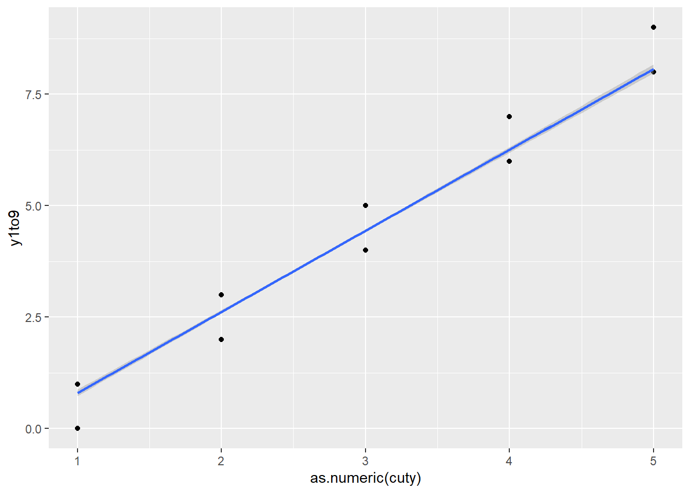

11 Miscellaneous
11.1 Linear algebra
11.1.1 Matrix basics
- dimensions of matrix
seed=123
X=matrix(1:12,ncol=3,nrow=4)
X| 1 | 5 | 9 |
| 2 | 6 | 10 |
| 3 | 7 | 11 |
| 4 | 8 | 12 |
dim(X)[1] 4 3 dim(X)[1][1] 4 ncol(X)[1] 3- change dimensions of matrix
dim(X)=c(2,6)
X| 1 | 3 | 5 | 7 | 9 | 11 |
| 2 | 4 | 6 | 8 | 10 | 12 |
- change names of matrix
a <- matrix(1:6,nrow=2,ncol=3,byrow=FALSE)
b <- matrix(1:6,nrow=3,ncol=2,byrow=T)
c <- matrix(1:6,nrow=3,ncol=2,byrow=T,dimnames=list(c("A","B","C"),c("boy","girl")))
c| boy | girl | |
|---|---|---|
| A | 1 | 2 |
| B | 3 | 4 |
| C | 5 | 6 |
rownames(c)[1] "A" "B" "C" colnames(c)[1] "boy" "girl" rownames(c)=c("E","F","G")
c| boy | girl | |
|---|---|---|
| E | 1 | 2 |
| F | 3 | 4 |
| G | 5 | 6 |
- replace elements of matrix
X=matrix(1:12,nrow=4,ncol=3)
X[2,3][1] 10 X[2,3]=1000
X| 1 | 5 | 9 |
| 2 | 6 | 1000 |
| 3 | 7 | 11 |
| 4 | 8 | 12 |
- extract diagonal elements and replace them
diag(X)[1] 1 6 11 diag(X)=c(0,0,1)
X| 0 | 5 | 9 |
| 2 | 0 | 1000 |
| 3 | 7 | 1 |
| 4 | 8 | 12 |
- create diagonal identity matrix
diag(c(1,2,3))| 1 | 0 | 0 |
| 0 | 2 | 0 |
| 0 | 0 | 3 |
diag(3)| 1 | 0 | 0 |
| 0 | 1 | 0 |
| 0 | 0 | 1 |
- extract lower/upper triangle elements
X| 0 | 5 | 9 |
| 2 | 0 | 1000 |
| 3 | 7 | 1 |
| 4 | 8 | 12 |
X[lower.tri(X)][1] 2 3 4 7 8 12 X[upper.tri(X)][1] 5 9 1000- create lower/upper triangle matrix
X[lower.tri(X)]=0
X| 0 | 5 | 9 |
| 0 | 0 | 1000 |
| 0 | 0 | 1 |
| 0 | 0 | 0 |
11.1.2 Operations
- transform
t(X)| 0 | 0 | 0 | 0 |
| 5 | 0 | 0 | 0 |
| 9 | 1000 | 1 | 0 |
- summary by row or column
A=matrix(1:12,3,4)
A | 1 | 4 | 7 | 10 |
| 2 | 5 | 8 | 11 |
| 3 | 6 | 9 | 12 |
rowSums(A)[1] 22 26 30 rowMeans(A)[1] 5.5 6.5 7.5- determinant of matrix
X=matrix(rnorm(9),nrow=3,ncol=3)
det(X)[1] 0.7165293- Addition
A=matrix(1:12,nrow=3,ncol=4)
B=matrix(1:12,nrow=3,ncol=4)
A+B #same dimensions (non-conformable arrays)| 2 | 8 | 14 | 20 |
| 4 | 10 | 16 | 22 |
| 6 | 12 | 18 | 24 |
- addition by scale
A=matrix(1:12,nrow=3,ncol=4)
2+A| 3 | 6 | 9 | 12 |
| 4 | 7 | 10 | 13 |
| 5 | 8 | 11 | 14 |
- multiple by scale
A=matrix(1:12,nrow=3,ncol=4)
2*A| 2 | 8 | 14 | 20 |
| 4 | 10 | 16 | 22 |
| 6 | 12 | 18 | 24 |
- dot multiple
A=matrix(1:12,nrow=2,ncol=4)
B=matrix(1:12,nrow=4,ncol=3)
A%*%B| 50 | 114 | 178 |
| 60 | 140 | 220 |
- kronecker multiple
A=matrix(1:4,2,2)
B=matrix(rep(1,4),2,2)
kronecker(A,B)| 1 | 1 | 3 | 3 |
| 1 | 1 | 3 | 3 |
| 2 | 2 | 4 | 4 |
| 2 | 2 | 4 | 4 |
- inverse matrix
must be square
A=matrix(rnorm(9),nrow=3,ncol=3)
A| -1.3843051 | -1.310550 | 0.740038 |
| 0.0789580 | 1.051403 | -0.711770 |
| -0.5636427 | 0.738301 | 2.260475 |
AI=solve(A)
AI| -0.7582116 | -0.9167069 | -0.0404247 |
| -0.0581822 | 0.7085465 | 0.2421523 |
| -0.1700547 | -0.4599988 | 0.3532150 |
# identity matrix
(A%*%AI)| 1 | 0 | 0 |
| 0 | 1 | 0 |
| 0 | 0 | 1 |
library(matlib)
inv(A)| -0.7582116 | -0.9167069 | -0.0404247 |
| -0.0581822 | 0.7085465 | 0.2421523 |
| -0.1700547 | -0.4599988 | 0.3532150 |
- generalized inverse
when it is not square
library(MASS)
A2=matrix(1:12,nrow=3,ncol=4)
A%*%ginv(A)| 1 | 0 | 0 |
| 0 | 1 | 0 |
| 0 | 0 | 1 |
A%*%ginv(A)%*%A| -1.3843051 | -1.310550 | 0.740038 |
| 0.0789580 | 1.051403 | -0.711770 |
| -0.5636427 | 0.738301 | 2.260475 |
- crossprod
B=matrix(1:12,nrow=4,ncol=3)
B| 1 | 5 | 9 |
| 2 | 6 | 10 |
| 3 | 7 | 11 |
| 4 | 8 | 12 |
crossprod(B)| 30 | 70 | 110 |
| 70 | 174 | 278 |
| 110 | 278 | 446 |
t(B)%*%B| 30 | 70 | 110 |
| 70 | 174 | 278 |
| 110 | 278 | 446 |
B=matrix(1:12,nrow=4,ncol=3)
ginv(B)| -0.375 | -0.1458333 | 0.0833333 | 0.3125 |
| -0.100 | -0.0333333 | 0.0333333 | 0.1000 |
| 0.175 | 0.0791667 | -0.0166667 | -0.1125 |
ginv(crossprod(B))| 0.2664931 | 0.0763889 | -0.1137153 |
| 0.0763889 | 0.0222222 | -0.0319444 |
| -0.1137153 | -0.0319444 | 0.0498264 |
# solve(crossprod(B)) #is singular
# solve((B)) #is not square- eigen values (decomposition)
mxn matrixA=UΛU
A=matrix(1:9,nrow=3,ncol=3)
Aeigen=eigen(A)
Aeigen$values[1] 1.611684e+01 -1.116844e+00 -5.700691e-16 val <- diag(Aeigen$values)
val| 16.11684 | 0.000000 | 0 |
| 0.00000 | -1.116844 | 0 |
| 0.00000 | 0.000000 | 0 |
- eigen vectors
Aeigen$vectors| -0.4645473 | -0.8829060 | 0.4082483 |
| -0.5707955 | -0.2395204 | -0.8164966 |
| -0.6770438 | 0.4038651 | 0.4082483 |
round(Aeigen$vectors%*%val%*%t(Aeigen$vectors))| 3 | 4 | 5 |
| 4 | 5 | 6 |
| 5 | 6 | 7 |
A| 1 | 4 | 7 |
| 2 | 5 | 8 |
| 3 | 6 | 9 |
11.1.3 Advanced operations
- Choleskey factor
positive definite matrix (symmetric square), A=P’P
covariance matrix is semi positive definite matrix
A=diag(3)+1
A | 2 | 1 | 1 |
| 1 | 2 | 1 |
| 1 | 1 | 2 |
chol(A)| 1.414214 | 0.7071068 | 0.7071068 |
| 0.000000 | 1.2247449 | 0.4082483 |
| 0.000000 | 0.0000000 | 1.1547005 |
t(chol(A))%*%chol(A)| 2 | 1 | 1 |
| 1 | 2 | 1 |
| 1 | 1 | 2 |
inverse using Choleshey
chol2inv(chol(A))| 0.75 | -0.25 | -0.25 |
| -0.25 | 0.75 | -0.25 |
| -0.25 | -0.25 | 0.75 |
inv(A)| 0.75 | -0.25 | -0.25 |
| -0.25 | 0.75 | -0.25 |
| -0.25 | -0.25 | 0.75 |
- singular value (svd) decomposition
m×n matrix
A=UDV
A=matrix(1:18,3,6)
svd(A) $d[1] 4.589453e+01 1.640705e+00 1.366522e-15 t(svd(A) $u)%*%svd(A) $u| 1 | 0 | 0 |
| 0 | 1 | 0 |
| 0 | 0 | 1 |
t(svd(A) $v)%*%svd(A) $v| 1 | 0 | 0 |
| 0 | 1 | 0 |
| 0 | 0 | 1 |
svd(A) $u %*%diag(svd(A) $d)%*% t(svd(A) $v)| 1 | 4 | 7 | 10 | 13 | 16 |
| 2 | 5 | 8 | 11 | 14 | 17 |
| 3 | 6 | 9 | 12 | 15 | 18 |
A| 1 | 4 | 7 | 10 | 13 | 16 |
| 2 | 5 | 8 | 11 | 14 | 17 |
| 3 | 6 | 9 | 12 | 15 | 18 |
- QR decomposition
m×n matrix
A=QR，where Q’Q=I, Q is orthogonal matrix
A=matrix(1:12,4,3)
qr(A)$qr
[,1] [,2] [,3]
[1,] -5.4772256 -12.7801930 -2.008316e+01
[2,] 0.3651484 -3.2659863 -6.531973e+00
[3,] 0.5477226 -0.3781696 1.601186e-15
[4,] 0.7302967 -0.9124744 -5.547002e-01
$rank
[1] 2
$qraux
[1] 1.182574 1.156135 1.832050
$pivot
[1] 1 2 3
attr(,"class")
[1] "qr"qr.Q(qr(A))| -0.1825742 | -0.8164966 | -0.4000874 |
| -0.3651484 | -0.4082483 | 0.2546329 |
| -0.5477226 | 0.0000000 | 0.6909965 |
| -0.7302967 | 0.4082483 | -0.5455419 |
qr.R(qr(A))| -5.477226 | -12.780193 | -20.083160 |
| 0.000000 | -3.265986 | -6.531973 |
| 0.000000 | 0.000000 | 0.000000 |
11.2 Calculus
11.2.1 Derivation
dx <- deriv(y ~ x^3, "x"); dxexpression({
.value <- x^3
.grad <- array(0, c(length(.value), 1L), list(NULL, c("x")))
.grad[, "x"] <- 3 * x^2
attr(.value, "gradient") <- .grad
.value
})mode(dx)[1] "expression"x<-1:2
eval(dx)[1] 1 8
attr(,"gradient")
x
[1,] 3
[2,] 12dx <- deriv(y ~ sin(x), "x", func= TRUE) ;
mode(dx)[1] "function"dx(c(pi,4*pi)) [1] 1.224606e-16 -4.898425e-16
attr(,"gradient")
x
[1,] -1
[2,] 1a<-2
dx<-deriv(y~a*cos(a*x),"x",func = TRUE)
dx(pi/3)[1] -1
attr(,"gradient")
x
[1,] -3.464102fxy = expression(2*x^2+y+3*x*y^2)
dxy = deriv(fxy, c("x", "y"), func = TRUE)
dxy(1,2) [1] 16
attr(,"gradient")
x y
[1,] 16 1311.2.2 Integration
integrate(dnorm, -1.96, 1.96)0.9500042 with absolute error < 0.00000000001integrate(dnorm, -Inf, Inf)1 with absolute error < 0.000094integrand <- function(x) {1/((x+1)*sqrt(x))}
integrate(integrand, lower = 0, upper = Inf)3.141593 with absolute error < 0.000027 integrand <- function(x) {sin(x)}
integrate(integrand, lower = 0, upper = pi/2) 1 with absolute error < 0.00000000000001111.3 Sample size calculation
#given proportion
px3=0.11
px4=0.07
px5=0.08
px6=0.06
px7=0.05
###################
Outcome0 = NULL
for (t in seq(350, 600, by=2)){ # change the possible sample size graudally from 400 to 700.
n=t
count=0
M=500 # times of simulation
for (i in 1:M){
# for a given sample size (400), for the first simulation,
# we use rbinom function simulate the contingencey table as below with above given proportions,
# and calculate the p value by using Chi square test for the simulation
x3=rbinom(1,n,px3)
x4=rbinom(1,n,px4)
x5=rbinom(1,n,px5)
x6=rbinom(1,n,px6)
x7=rbinom(1,n,px7)
data=matrix(c(x3,n-x3,x4,n-x4,x5,n-x5,x6,n-x6,x7,n-x7 ),ncol=2,byrow=T)
# if the p value of this simulation is less than 0.05, it means we get the significant result for the given this sample size this time. it means we detected the difference in this simulation experiment when the difference is true.
pv=prop.test(data)$p.value
count=as.numeric(pv<0.05)+count #sum of pv<0.05
} #end loop of p value
power0=count/M
temp <- data.frame(size=t,power=power0)
Outcome0 = rbind(Outcome0, temp)
} #end loop of power from different sample size
# generate a new variable named "power_loess" by loess method because the curve of sample size and power is not enough smooth
power_loess <- round(predict(loess(Outcome0$power ~ Outcome0$size,data=Outcome0,span=0.6)),3)
Outcome0 = data.frame(Outcome0, power_loess)
# plot a line chart of the power and sample size, and smooth the curve by loess method
plot (Outcome0$size, Outcome0$power,type = "n", ylab = "Power",xlab="Sample size",
main = expression(paste("Power analysis for GDM")))
abline(h=0.9,col='red',lwd=2,lty=2)
abline(h=0.85, col='red',lwd=2,lty=2)
abline(h=0.8,col='red',lwd=2,lty=2)
lines(Outcome0$size,power_loess,col="blue",lwd=2)
11.4 How to evaluate z score
- Call the parameter estimates file
PE= matrix(PE,nrow=5,byrow = T)
index= Ultra-3;
info= PE[index,]
fcoef=info[3:9]; sigma=info[10];Sigmab= matrix(info[11:26],4,4);Zeta=info[27:29];varfixed= matrix(info[30:78],7,7)
#abstract specific parameters to calculate mean and SD - calculate mean and std
Set a value,like 28.29
i = 28.29
int <- 1
t1 <- i
t2 <- i**2
t3 <- i**3
tt1 <- (i - Zeta[1])**3 * (i > Zeta[1])
tt2 <- (i - Zeta[2])**3 * (i > Zeta[2])
tt3 <- (i - Zeta[3])**3 * (i > Zeta[3])
Fxxi = cbind(int, t1, t2, t3, tt1, tt2, tt3)
Rxxi = cbind(int, t1, t2, t3)
mean <- Fxxi%*%fcoef
var <- sigma**2 + Rxxi%*%Sigmab%*%t(Rxxi) + Fxxi%*%varfixed%*%t(Fxxi)
std <- sqrt(var) - Output the calculated mean
cat("Actual Mean=",exp(mean)) Actual Mean= 9.358071- Calculate Z score
cat("Z score=",((log(289 ))-(mean))/std) Z score= 0.4419324- Result checking
pnorm(0.4465193, mean=0, sd=1) [1] 0.672388911.5 Mathmatic coupling
It makes sig into non sig
set.seed(1234) # Random seed
x1 <- rnorm(1000) #Normal IVs
x2 <- rnorm(1000)
x3 <- rnorm(1000)
yraw <- x1 + x2 + x3 + rnorm(1000,0, 10)
y1to9 <- (yraw + -1*min(yraw) + 1)
y1to9 <- trunc(y1to9*(9/(max(y1to9)))) #Create a Y variable that goes 1 to 9
cuty <- cut(y1to9,5)
head(cuty)[1] (1.8,3.6] (3.6,5.4] (3.6,5.4] (5.4,7.2] (5.4,7.2] (1.8,3.6]
Levels: (-0.009,1.8] (1.8,3.6] (3.6,5.4] (5.4,7.2] (7.2,9.01]model1 <- lm(y1to9~x1 + x2 + x3) # Regular model
summary(model1) #Gives sensible values
Call:
lm(formula = y1to9 ~ x1 + x2 + x3)
Residuals:
Min 1Q Median 3Q Max
-4.0798 -0.8990 0.0888 1.0473 4.8964
Coefficients:
Estimate Std. Error t value Pr(>|t|)
(Intercept) 3.79492 0.04470 84.899 < 2e-16 ***
x1 0.13592 0.04488 3.029 0.00252 **
x2 0.14269 0.04564 3.126 0.00182 **
x3 0.12522 0.04417 2.835 0.00468 **
---
Signif. codes: 0 '***' 0.001 '**' 0.01 '*' 0.05 '.' 0.1 ' ' 1
Residual standard error: 1.412 on 996 degrees of freedom
Multiple R-squared: 0.02715, Adjusted R-squared: 0.02422
F-statistic: 9.265 on 3 and 996 DF, p-value: 0.000004786model2 <- lm(y1to9~x1 + x2 + x3 + cuty) # Adding the cut of y
summary(model2) #X1, x2, x3 not sig; R^2 is 0.75
Call:
lm(formula = y1to9 ~ x1 + x2 + x3 + cuty)
Residuals:
Min 1Q Median 3Q Max
-0.8743 -0.4458 0.1291 0.4295 0.8184
Coefficients:
Estimate Std. Error t value Pr(>|t|)
(Intercept) 0.84267 0.06897 12.218 <2e-16 ***
x1 0.02187 0.01540 1.420 0.156
x2 0.01360 0.01567 0.868 0.386
x3 0.01324 0.01516 0.873 0.383
cuty(1.8,3.6] 1.77791 0.07342 24.214 <2e-16 ***
cuty(3.6,5.4] 3.59343 0.07243 49.611 <2e-16 ***
cuty(5.4,7.2] 5.40203 0.08464 63.825 <2e-16 ***
cuty(7.2,9.01] 7.37863 0.25190 29.292 <2e-16 ***
---
Signif. codes: 0 '***' 0.001 '**' 0.01 '*' 0.05 '.' 0.1 ' ' 1
Residual standard error: 0.4821 on 992 degrees of freedom
Multiple R-squared: 0.8871, Adjusted R-squared: 0.8863
F-statistic: 1113 on 7 and 992 DF, p-value: < 2.2e-16df <- data.frame(cuty, y1to9)
# it causes the coefficient of x1 is 1; others equal 0.
library(ggplot2)
ggplot(data = df,
mapping = aes(as.numeric(cuty), y1to9)) +
geom_point() +
geom_smooth( method = "lm")`geom_smooth()` using formula = 'y ~ x'
11.6 How to create a bookdown
- create a github rep
- create a new project using version control whit Git and SVN
- create a directory in p drive
create a new project using bookdown
install bookdown package in R
delete and add markdown document in this bookdown project (bookdown rank chapters according to the names of markdown documents, it is necessary to put a charpter in one markdown)
modified some places to config it as customized profile
built to see the html version
- hit git then select all updated documents
- commit and push
- open netlify using github account then deploy the rep from github
- change your website
11.6.0.1 How to git up a project into github
see youtube tutorial
hit tools- version control- project setup
git- commit
create a new rep in github, do not select readme.
copy three code…
in terminal window, enter
git
git
git
push
11.7 How to create a blogdown
it is a little more compliaced to create a blogdown than to create a book because you need to config more parameters.like index file
11.8 How to install tensorflow and keras
see youtube tutorial
Install TensorFlow from rstudio github.
library(usethis)
library(devtools)
options(download.file.method = "wininet") #if needdevtools::install_github(“rstudio/tensorflow”,force = T)
library(tensorflow)
library(reticulate)
options(download.file.method = "auto") #if needreticulate::install_miniconda(force = TRUE)
install_tensorflow()
Install Keras from rstudio github.
devtools::install_github(“rstudio/keras”)
Execute the belowlibrary(keras)
restart r studioinstall_keras()
11.9 How to use github in team
clone main
$ git config –global user.name “Daniel”
$ git config –global user.email “daniel@gmail.com”
$ git clone https://xx
$ pwd
$ cd xx/
create branch
$ git branch
$ git branch hello
$ git checkout
$ git checkout hello
(git checkout -b hello)
push to branch
$ git add -A
$ git commit -m “branch”
$ git push -u origin hello
merge main then pull request
wb- compare and pull request (click here github)
wb- merge pull request
wb- comfirm merge
wb- Pull request successfully merged and closed
pull all and push all
git pull origin master
git add -A
git commit -m “newbranch”
git push
ls
wb- contribute- compare
wb- create new pull
wb- create new request
wb- merge pull request
wb- comfirm merge
wb- Pull request successfully merged and closed
miscellanies
git checkout master
git branch -D xxx
git status <: modified>
git merge newbranch
git push origin master
get remote -v
git remote rm xxxxx
cd “C:”
cd notes/
mkdir projects
git reflog
git reset or git revert
git init <add .git>
rm -rf .git <remove .git>
11.10 How to insert picture indrectly in markdown
library(rstudioapi)
library(rmarkdown)
library(imageclipr)
Attaching package: 'imageclipr'The following object is masked from 'package:plotly':
config